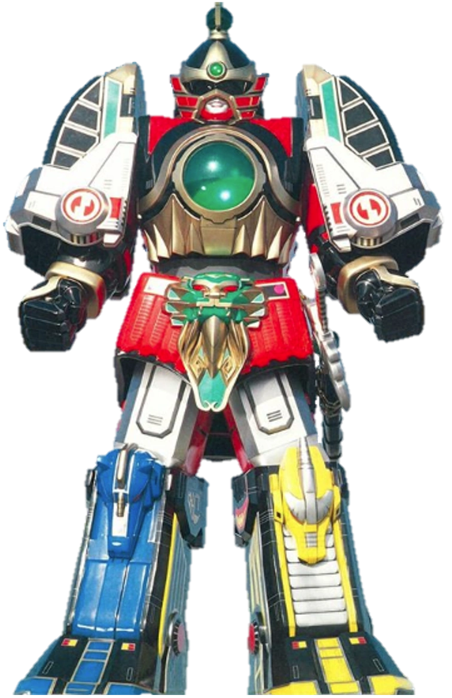
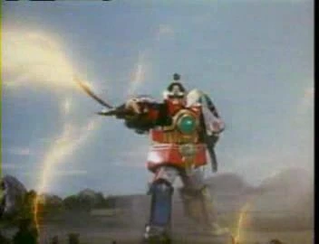
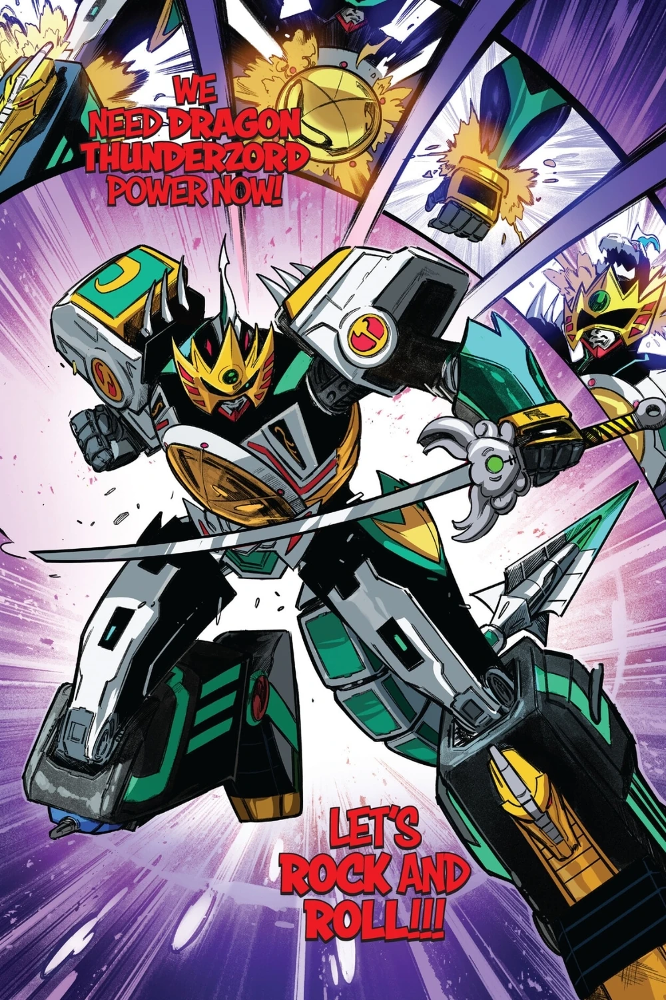

Información del Personaje
Origen: Angel Grove
Altura: 116 metros
Peso: 510 toneladas
Alianza: GUERRERO DE CONFIANZA CLASE DEFENSIVA
Historia
El Thunder Megazord es una de las armas de defensa planetaria más poderosas desarrolladas por los Power Rangers durante su enfrentamiento contra Lord Zedd. Fue creado a partir de los restos reconstruidos de los Dinozords originales, que fueron destruidos durante los primeros embates del villano intergaláctico. Mediante la magia ancestral de Zordon y el poder del Rayo del Trueno, los Dinozords fueron transformados en formas más avanzadas y espiritualmente conectadas con la fuerza del rayo y el relámpago
Este Megazord es una combinación de cinco Thunderzords, cada uno pilotado por un Ranger. Su armadura mejorada, su espada celestial y sus capacidades de vuelo lo hacen un recurso indispensable durante amenazas kaiju o entidades de clase omega.
Composición del Thunder Megazord
Thunderzord Dragon rojo – Zord principal, transforma en forma humanoide.
Thunderzord Leon – Base torácica y patas.
Thunderzords Unicornio e Hipogrifo – Brazos y soporte.
Thunderzord Pajaro de Fuego – Alas y estabilidad aérea.
Los Mobile Suit Zaku son la herramienta bélica más representativa de un régimen belicista y expansionista. La WKDF mantiene su posición firme contra el Principado de Zeon y continuará apoyando a la Federación de la Tierra para garantizar que los Zaku no se conviertan en una plaga mecánica sobre nuestro planeta. Su apariencia puede parecer estándar, pero su presencia representa un peligro constante para la seguridad global.
Relación WKDF - Power Rangers
La WKDF ha clasificado al Thunder Megazord como un recurso de defensa nivel A, totalmente confiable y autorizado para actuar en situaciones de emergencia global. Aunque los Power Rangers son en su mayoría adolescentes, la WKDF reconoce su madurez, valentía y profesionalismo en el campo de batalla. Esta confianza se ha ganado gracias a la repetida protección de la ciudad de Angel Grove y otras regiones del mundo sin daño colateral considerable.
Protocolos de Coordinación
La WKDF ha firmado el Pacto del Rayo Blanco, un acuerdo interinstitucional con Zordon y Alpha 5 para facilitar la cooperación y compartir información sobre amenazas dimensionales, el equipo de Rangers también participa en simulacros secretos junto a unidades mecha y Jaegers como parte de su preparación compartida.
La WKDF reconoce al Thunder Megazord como un bastión de esperanza. Los Power Rangers, pese a su corta edad, han demostrado una disciplina y liderazgo ejemplar. La confianza absoluta en ellos ha llevado a que el Thunder Megazord sea uno de los pocos activos considerados aliados sin condiciones por la organización.
Imagen del Sujeto
Habilidades
Ataque Bomba de humo
El Thunder Megazord puede generar una niebla blanca que se expande rápidamente desde sus manos, lo suficientemente fuerte como para derribar monstruos gigantes al suelo.
Thunder Saber
El Thunder Megazord usa su espada, el Thunder Saber, como arma y potencia la espada antes de realizar un gran corte para acabar con el monstruo, que incluso es capaz de disparar poderosas descargas electricas para aturdir las criaturas.
Combinacion de Zords
Al igual que todos los otros Zords, El Thunder Megazord es capaz de combinarse con otros Zords para hacerse mas poderoso incluyendo mezclarse con el Tigrezord Blanco para crear el Mega Tigrezord o con el Dragonzord para crear al Thunderdragonzord llevando a nuevas armas y habilidades especiales.
Videos de Metraje Encontrado
Video de Evidencia 1: Sequencia de transformacion de el Thuder Megazord
Video de Evidencia 2: Thunder Megazord vs Pipebrain
Video de Evidencia 3: El alzar del Thunder Ultrazord
Video de Evidencia 4: El caer de los Thunderzords (se puso mejor)